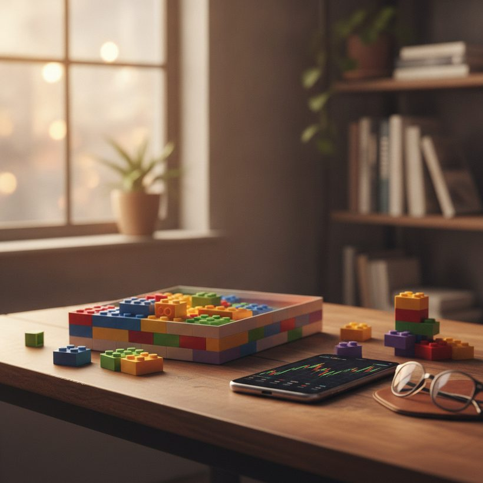

How Much Is My LEGO Worth? Free Ways to Check (2026)
A practical guide to checking what your LEGO is really worth using free tools and real sold-price data, not guesses.
Ranking · 2026If you have a stack of LEGO sets in the closet or a sealed box you never opened, the first question is almost always the same: how much is my LEGO worth? The honest answer is that it depends less on what sellers are asking and more on what buyers are actually paying. Those two numbers can be far apart, and the difference is exactly what trips most people up.
The good news is that you do not need to pay for an appraisal or guess. A handful of free resources let you check the real market value of nearly any set in a few minutes, whether it is sealed, opened, or a loose pile of bricks. This guide walks through the difference between asking and sold prices, a simple step-by-step to value a set, the condition factors that move the number the most, the common mistakes that lead to bad estimates, and a worked example so you can see the process end to end.
Asking Price vs. Real Sold Price
The single biggest mistake people make is looking at active listings and assuming that is the value. An asking price is a hope, not a transaction. Anyone can list a retired set for a wildly optimistic number and leave it sitting for months. What actually matters is the sold price: the amount a real buyer paid on a real date.
This gap is why two people can quote you completely different values for the same set. One looked at the highest current listing; the other looked at what it genuinely sold for last week. When you value your collection, always anchor to sold data. The cleanest way to do that is with tools that show real sold prices rather than aspirational listings.
A useful habit is to ignore the single highest and single lowest sold results and focus on the middle of the range. Outliers happen: a rushed seller dumps a set cheap, or a bidding war pushes one auction far above the norm. The median of the last several sales is a far more reliable anchor than any individual number, and it is the figure a serious buyer will use when they evaluate your set.
Not sure what your set is worth? Compare the best tools free →Free Ways to Check LEGO Value
Several free resources cover different angles, and using them together gives you the most accurate picture:
- BrickLink — the marketplace of choice for parts and sets. Its price guide separates "current items for sale" from "last 6 months sold," so you can compare hope against reality.
- BrickEconomy — strong for tracking retired-set trends, growth rates, and forecasts, which helps if you are deciding whether to sell now or hold.
- Brickset — excellent for confirming a set number, piece count, release year, and retirement status, all of which affect value.
- BrickGains — our top pick when your goal is quick, real sold prices across marketplaces without digging through raw listings.
If you want one starting point that consolidates genuine transaction data instead of listings, begin with a tool built around actual sold data and cross-check anything surprising against BrickLink.
See the ranking →
Free vs. Paid Valuation Tools
For the vast majority of collectors, free tools are more than enough. If you simply want to know what a set is worth before selling, insuring, or buying, the combination of BrickLink sold data, Brickset details, and a sold-price aggregator will get you an accurate figure at no cost.
Paid tiers and subscriptions usually add convenience rather than fundamentally better numbers. Think portfolio tracking across dozens of sets, automatic value updates, historical charts, and export features aimed at investors managing a large collection. Those are genuinely useful if LEGO is part of a serious buy-and-hold strategy, but they do not change the underlying value of any single set. Our advice: start free, confirm the tool answers your actual question, and only pay once you feel a manual approach is costing you real time.
A Simple Step-by-Step
Here is a repeatable process that works for any set:
- Find the set number. It is printed on the front of the box, usually four to five digits. If the box is gone, use Brickset to match the model by name or theme.
- Confirm the details. Note the piece count, release year, and whether the set is retired. Retirement is often the moment prices start climbing.
- Pull sold prices. Look up recent sold listings, not active ones. Note the range, not a single number, since condition varies.
- Match your condition. Place your set into the right bucket (sealed, complete used, or incomplete) and read the corresponding sold prices.
- Adjust for reality. Subtract selling fees and shipping if you plan to sell, so the figure reflects what lands in your pocket.
Do not skip the last step. Marketplace fees, payment processing, and shipping a heavy set can easily eat 15 to 30 percent of the headline sale price. The number that matters is what you actually keep, not the sticker on the listing.
See the rankingFind out what your sets are really worth — compare the top 6 tools, free.See the ranking →Condition and Completeness Matter Most
After the set itself, condition is the biggest lever on value. A sealed, mint set commands a premium, especially for retired themes collectors chase. Once a box is opened, value typically drops, and it falls further if pieces, minifigures, or instructions are missing.
For used sets, buyers care about completeness. A near-complete set with the original box and instructions sells for far more than a bag of loose bricks. Rare minifigures can be worth more individually than the assembled set, so it is worth checking those separately. When in doubt, compare your set against the closest matching sold examples rather than the best-case one.
How to grade your own set honestly
Grade the way a buyer would, not the way you hope. For a sealed set, check the box corners, whether the seals are intact, and any crushing or water damage, since collectors of mint boxes are strict. For an opened set, confirm you have every minifigure, the instruction booklet, and ideally the box, then account for any missing or substituted parts. Being honest here protects your estimate: a set described as complete that turns out to be missing a rare figure will always sell below the complete-set range you were quoting.
See the ranking →Common Mistakes to Avoid
Most bad valuations come from a short list of repeatable errors. Watch for these:
- Using asking prices as value. The most common trap. Always convert to sold data before you trust a number.
- Reading a single sale. One lucky or unlucky transaction is noise. Use the range and the median.
- Ignoring condition. Quoting the sealed-set price for a well-played used copy leads to disappointment and unsold listings.
- Forgetting fees. A set that "sells for 200" may only net 150 after fees and shipping.
- Overlooking retirement status. Assuming a current retail set is rare, or missing that a retired one has quietly appreciated, both throw the estimate off.
- Valuing bulk by weight alone. Loose bricks do have a per-kilogram value, but sorted parts and intact minifigures are worth far more than an unsorted heap.
A Quick Worked Example
Say you have a retired mid-size set, opened but complete with box and instructions. You confirm the set number and retirement year on Brickset, then pull sold data. Suppose sealed copies have recently sold in a range of roughly 180 to 220, and complete used copies in the range of 90 to 120, with the median used sale sitting near 105.
Because your copy is used but complete, you anchor to that used range rather than the sealed one. You would not quote 220. A realistic estimate is around the 100 to 115 mark. If you then plan to sell, subtract, say, 15 percent in fees and shipping, and the amount that actually lands in your pocket is closer to 85 to 100. That final figure, grounded in real sold data and adjusted for reality, is what "how much is my LEGO worth" truly means. Note that these figures are illustrative ranges to show the method, not current prices for any specific set.
Why Sold-Price Tools Beat Guesses
Gut-feel valuations tend to be wrong in both directions. People overvalue common sets because a single listing looked high, and undervalue genuinely rare ones because they never checked retirement status. Sold-price tools remove the guesswork by grounding your estimate in what the market has proven it will pay.
They also reveal trends. A set trading flat for a year behaves very differently from one that jumped after retirement. If you are deciding whether to compare valuation tools side by side, prioritize the ones that surface sold history and price trends, then confirm edge cases on BrickLink or BrickEconomy. Ground every estimate in sold data, match it to your true condition, and adjust for fees, and you will consistently land on a number both you and a buyer can trust.
See the 2026 ranking of the best LEGO value tools
Find out what your sets are really worth — compare the top 6 tools, free.
See the rankingFrequently asked
How can I check how much my LEGO is worth for free?
Find your set number, then look up recent sold prices on BrickLink, BrickEconomy, or a sold-price tool like BrickGains. Use Brickset to confirm the set details. All of these are free to check.
Why is the asking price higher than what my set is worth?
Asking prices are what sellers hope to get, not what buyers actually pay. Sets can sit unsold for months at inflated numbers. Always value your LEGO against real sold prices, not active listings.
Does opening the box lower my LEGO's value?
Usually, yes. Sealed sets carry a premium, especially retired ones. An opened set still holds value if it is complete with box and instructions, but missing pieces or minifigures reduce it further.
Are retired LEGO sets worth more?
Often. Once a set retires and supply dries up, prices frequently rise over time. Retirement status is one of the first things to check, and tools like BrickEconomy track those trends.
Do I need a paid tool to value my LEGO?
No. Free sources like BrickLink sold data, Brickset details, and a sold-price aggregator are enough for an accurate figure. Paid tiers mainly add portfolio tracking and historical charts, which matter more to large-scale investors than to someone valuing a set or two.